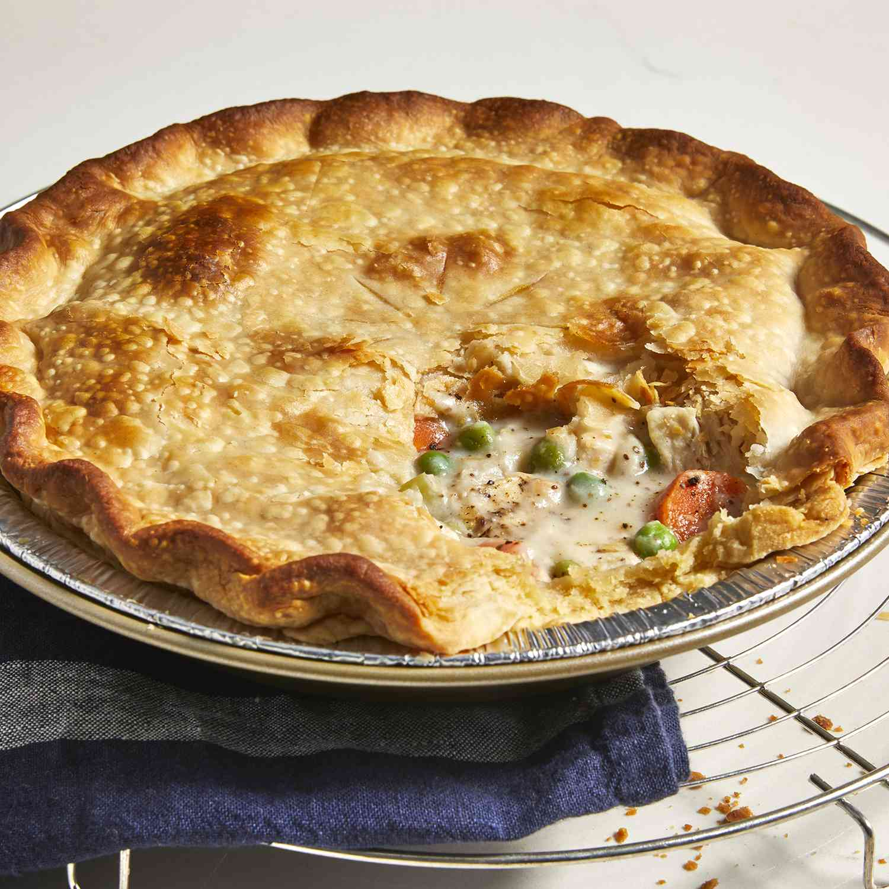

Chicken Pot Pie

Ingredients:
- Boneless, skinless chicken breasts cut into cubes
- Peas
- Carrots
- Onion
- Celery
- Butter
- Flour
- Salt
- Pepper
- Celery Seed
- Chicken Broth
- Milk
- Pie Crust
Directions
- Boil the cubed chicken with the carrots, peas, and celery for 15 minutes
- Drain and set aside
- cook the onions in butter until they are translucent
- Stir in the flour and seasonings
- Add the chicken broth and milk, simmering until the filling is thick
- Place the filling in your pie crust
- Cover the top crust, seal the edges, and cut slits in the top to allow steam to escape
- Bake until the crust is golden brown and the filling is bubbling